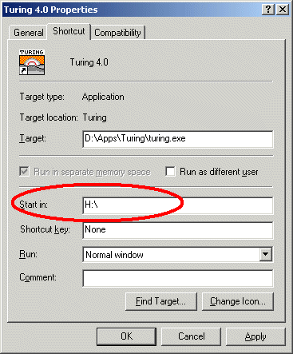

This guide is designed to be the minimal information that you should read ifyou are teaching courses using Turing 4.0 or are in charge of administering Turing 4.0
This guide provides information on the Turing environment (the editor, therun windows, etc.) It does not provide any information on the Turingprogramming language itself.
Note, if you have any questions not answered here, please check with the Turing Teacher/Administrator's Complete Guidefor more information.## Table of Contents - Making Certain You Have the Lastest Version - Mandatory Administration Issues - Using the Parallel Ports in Turing 4 - Student Distribution - Technical Support
Turing 4.0 is updated regularly. To find out what version youare currently running, click the About Turing menu item in the Help menu. To find out the current version of Turing, go tohttp://www.holtsoft.com/turing/support/#currentversion. This lists thecurrent version of the software.
This page also lists which bugs have been fixed and when new features havebeen added. The page also contains a section (http://www.holtsoft.com/turing/support/#turing4patches)where a file can be downloaded that will update most versions of Turing to the latest version.
If you are a teacher or an administrator at a school and require a complete installation file (as opposed to the publically available patch), contact TomWest at (416) 978-8363.## 2. Mandatory Administration Issues Turing 4.0 has been designed to run on either a network or installed on individual stand-alone machines. Running on a network is often preferredbecause of ease of administration. However, Turing, like any other applicationwill load somewhat faster when it is launched if it is stored locally.
There are only two administration issues that must be addressed to configure Turing properly.- Set the start-in (often called the "working") directory properly.
It is important that the start-in directory for Turing be set to the student's home directory. This is done by setting thestart-in (or working) directory of the shortcut or menu item used to launch Turing to the drive mapped to the student's home directory.
The shortcut's working directory can be modified bychanging it's start-in or working directory property. (To display theProperties dialog box, right click on the shortcut or menu item and select Properties from the pop-up menu.)

Properties for a Shortcut under Windows 2000
This requires that you have write access to the shortcut. Note that commercial menu front-ends havetheir own way of setting the start-in directory of applications.
If there is no drive mapped to the student's home directory, or this method is not applicable to your system setup, please check with the Turing Teacher/Administrator's Complete Guidefor more information.
Turing can be set to Beginner mode, in which case only onefile is open at a time. Opening up another file closes the first one.When the program is running, the Editor window minimizes. In this way,only one window is usually visible at a time. In this fashion, Beginner mode is similar to the old DOS Turing.
In Regular mode, any number of files can be opened and eachappears in its own editor window.
In general, we suggest Beginner mode for grade 9 and 10 andRegular mode for all others. If you are using Beginnermode, we suggest that you point out to the students that they can usethe Prefences to change to Regular mode when they feel comfortable with the environment.
To change the mode (or to make any other change to the system preferences), you must open a DOS window, cd to the directory in which the Turing executable (turing.exe) is located and issue the command:
turing -admin
This will cause Turing to start in Administrator mode, displaying the following dialog box:
Administration Mode Notification
Selecting Preferences from the File menu will display a tabbed dialog box of all the Turing preferences.
Preferences in Administrator Mode
Set (or unset) the Beginner Mode preference, click the OKbutton and quit Turing. Of course, you can change any other preferencesthat you would like. Any changes that you make here will affect all those using Turing.
Turing 4.0 supports the parallelput and parallelget commandsto allow you to set the pins on the parallel port low and high. If you arerunning under Windows NT, 2000 or XP, you will need to install a devicedriver on each machine. Instructions for doing so can be found here. If parallelput and parallelget do not seem to function, you may need to change theirBIOS settings. You can get information on how to do that here.## 4. Student Distribution of Turing 4.0 The Ontario Ministry license does not include the right to redistribute the software to students. If you wish to give the software to students, a separate license must be obtained directly from Holt Software.
If your school does not have such a license, students can purchase the software for home use by printing and then mailing an order form foundhttp://www.holtsoft.com/studentbuy. This order form can also be used to allow interested students to purchase textbooks.
If your school has purchased a redistribution license (almost 200 schools havedone so), then you may redistribute the Turing software to your students. You can either burn copies of the CD to distribute to students or place the Turing installer file onto your school Internet server and give your students the URL.
If you place this file on your school internet server, you must not make any links from your web pages to the software.
This will prevent other users of the web from downloading your software. If you place links from your school's web site, then at some point a web search engine will find the software and post its location to the internet at large, allowing for large scale piracy (and a very overloaded school web server). If there are no links to the software, then only those who have been told the exact URL will be able to download the software.
Note that if you are copying a number of different programs onto a single CD for redistribution, you may rename the Turing installer program to something more descriptive.
Permanent student redistribution licenses can be purchased for $500-$750 for most schools. If you are interested in purchasing a student redistribution license, contact Chris Stephenson at (416) 978-6476 or chris@hsa.on.ca## 5. Technical Support If you have problems, questions or suggestions about the Turing software, contact technical support at: Telephone: (416) 978-8363 Toll free: 1-800-361-8324 Fax: (416) 978-1509 E-mail: west@hsa.on.ca